不可视境界线最后变动于：2022年5月1日 晚上
bombLab
阅读
bomb.c代码，注意到程序可以打开某个文件，并将其作为输入的来源。
所以我们可以建立一个文件并将找到的phases存至其中，以避免重复的输入gdb的cheatsheet
从bomb.c中看到, 程序可以接受参数, 并且会将其作为程序的输入.
键入
1
gdb bomb29，在main函数初始位置下断点(可以使用.gdbinit)，并输入
1
run input以启动调试。
input是传给bomb的参数（输入文件的名称）
phase_1
直接在gdb中打开bomb29(我重命名了), 输入第一关字符串, nextcall指令(已装peda插件)直接看到一个string对比函数, 两个参数分别是我的输入和一个固定字符串. 换成正确答案即可. 查看其余汇编代码没有多余的判断逻辑.
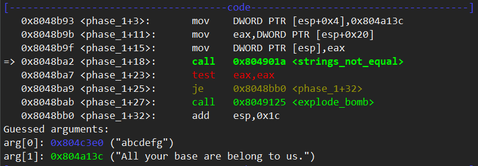
phase_2
首先能看到call 0x804914c <read_six_numbers>指令, 进一步查看函数后有两个参数, 第一个参数是输入字符串的地址, 第二个参数是phase_2函数中的临时变量栈区域地址, 也就是esp+0x18=0xffffd418. 读取数字并使用sscanf判断是否为六个数字, 否则bommmmb.
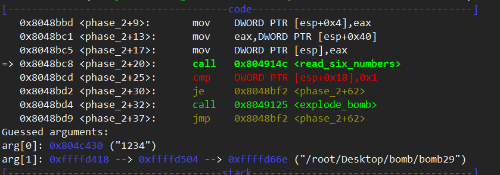
输入改成六个之后, 继续查看.
第一个数字必须是1. 然后是一些跳转, 经过转换成类c代码就是:
1 | |
转换成高级语言的形式就比较容易看出其中的逻辑, 也就是在第二个到第六个数字中每个数字必须是前一个数字的两倍, 也就是公比为2的等比数列. 换成1 2 4 8 16 32即可通过.
phase_3
这一关直接查看汇编码, 容易看出有一个一个switch跳转表.
在这之前是sscanf, 有四个参数, 分别是输入字符串, 一个固定字符串, 然后是两个栈上的局部空间地址, 这里命名为v1和v2, 从esp+0x18开始.
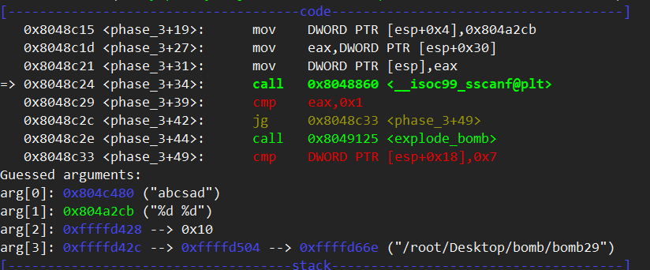
然后返回值必须大于1. 其实最多也就能输入两个数字, 多的会被sscanf舍弃.
第一个数必须小于7, 然后作为跳转表的索引跳到对应地址, 将一个值赋值给eax. 就是下面这个:
1 | |
然后会判断v2是不是result的值. 否则爆炸.
答案显而易见, 选取第一种: 0 331即可.
phase_4
sscanf仍然是四个参数, 至少是两个数字, 多的会被舍弃. 参数仍然从0x18开始. 叫做v1 v2吧
没有往回跳转的jmp, 所以直接看顺序的流程即可.
v1要小于等于0xe, 然后调用func4(v1, 0, 0xe), 并判断其返回值是否等于7, 然后第二个参数也要为7.
然后再看func4, 本身是一个递归调用的函数. 对应c代码如下:
1 | |
暴力穷举(yyds)之后可以得到答案: 14, 也就是0xe.
phase_5
phases_5函数中，程序会
判断读入的字符串长度是否等于6
循环6次，以
ch & 0xf为索引，每次在全局字符串maduiersnfotvbyl中获取一个字符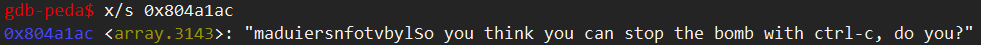
待6次循环结束后，将选出的字符串与字符串
"sabres"相比较，如果相同，则通过当前关卡
然后man ascii查询hex表示的最低位, 也就是查看第四位.
故根据上面的信息可得，phases_5: GAMFEG（答案不唯一）
phase_6
输入的6个数字从esp+0x10开始.
第一部分是一个嵌套循环。
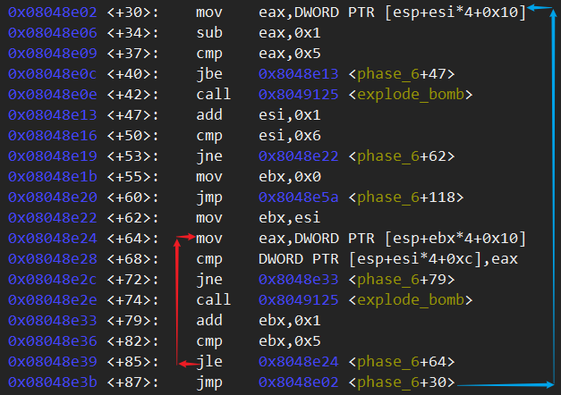为便于理解，将该嵌套循环的汇编代码翻译为如下类C代码：
1
2
3
4
5
6
7
8
9
10
11
12
13
14int num[6]
int pos1 = 0
do{
tmp = num[pos1]
tmp - 1 MUST <= 5
pos1 += 1
if(pos1 == 6) break
int pos2 = pos1
do{
if(num[pos1-1] == num[pos2]) bommmb
pos2 += 1
}while(pos2 <=5)
}while(1)这个代码比较简单，因为它实际上就是遍历检测所输入的6个数是否出现重复，如果存在重复则爆炸。同时还将输入的数字限制在了1-6中(注意其中的数字是 无符号 整数), 所以问题就在于六个数字的顺序.
第二部分同样是一个嵌套循环，不是一个顺序结构，将该部分的汇编代码转换为如下的C代码并调整代码顺序后如下：
1
2
3
4
5
6
7
8
9
10
11
12
13
14
15
16
17
18
19
20for ( i = 0; i != 6; ++i )
{
v6 = num[i];
if ( v6 == 1 )
{
v4 = &node1;
}
else
{
v5 = 1;
v4 = &node1;
do
{
v4 = *v4[2];
++v5;
}
while ( v5 != v6 );
}
*(&v15 + i) = v4; //v15是栈上一个空间的地址
}程序遍历之前转换的值，并将其作为索引，来获取链表上特定位置的地址，并将其存入栈中。
第三部分还是一个万年不变的循环。
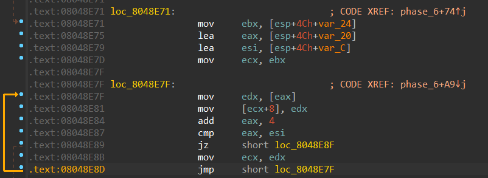 这个循环会改变原来的链表顺序，并将其设置为栈上链表的顺序。其代码如下
1 | |
- 第五部分是一个校验循环。这个循环会使用新顺序来获取链表上的值并判断其关系，其中链表上的值必须逐级递增，否则炸弹爆炸。
- 其中ebx是
&list[i], eax是下一个元素的第一个整数元素.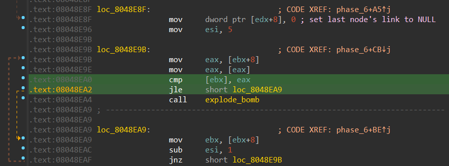 - 由于链表上的值顺序为 node3 > node4 > node6 > node2 > node1 > node5
故我们最后终于可以得出phases6: 5 1 2 6 4 3
secret_phase
查看函数表会发现有个secret_phase!, 可是在main函数中并没有直接调用. 发现在phase_defuse中有调用, 第一个调用条件就是num_input_strings == 6. 这个在每个read_line()函数中都有用到, 每次读取一行就会加一, 每行占据80字节.
再查看sscanf参数, 发现读取字符串是read_line读取到的空间中第四个区域, 也就是phase_4的空间中.
回想一下phase_4, sscanf只会识别前两个数字, 也就是phase_4的答案, 这一行中第三部分写成DrEvil就会在执行完phase_6之后(num_input_strings==6)满足第二个条件, 从而进入到secret_phase中.
当然, 直接使用gdb也可以快速的找到这一点. 直接在phase_6结束后在sscanf下断点, 就能发现第一个参数是第四关输入字符串的地址.
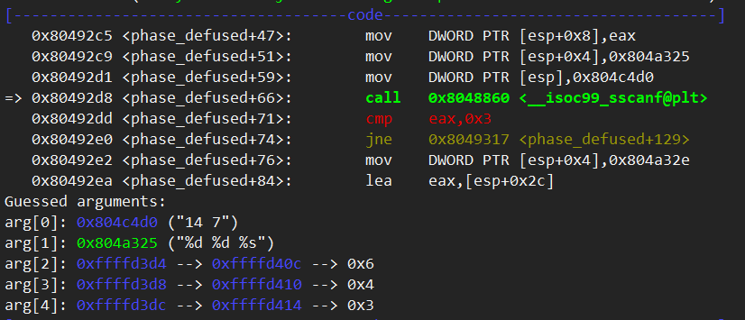进入secre_phase.
使用read_line读取一行, 然后_strtol转换成数字, 要小于3E9. 再调用fun7(n1, num), 其中n1是一个未知结构体, 存着一个数字两个指针, 大小12字节, num是输入的数字. 函数返回值必须为零.
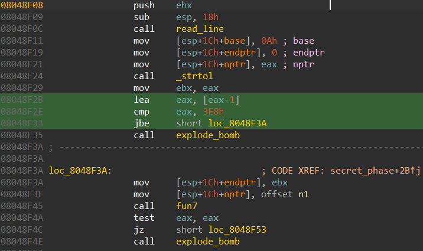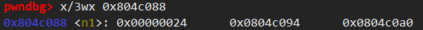
再看func7, 能想到这是一个数的node, 毕竟一个数据然后左右指针指向子树, 函数中+还有递归调用, 所以看起来就是检查树节点的数值特征.
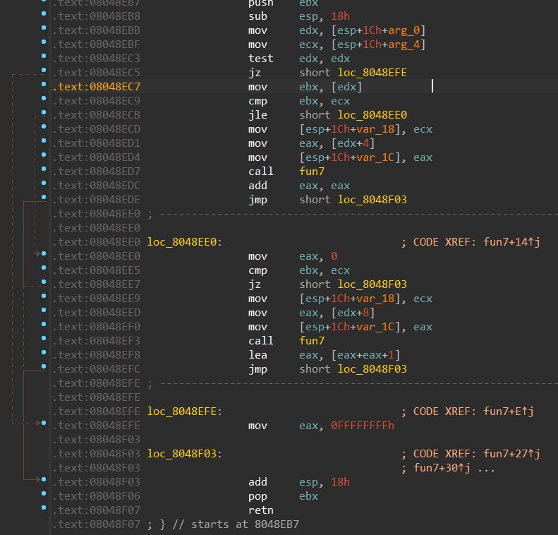代码如下:
1 | |
查看树的所有node(画这么多个好像没啥用……):
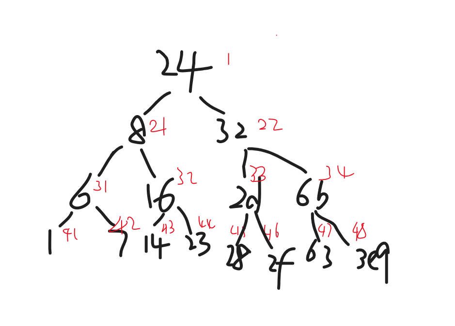输入的数字不会改变, 一直用在比较之中, 重点就在怎么凑出一个0. 最简单的, 直接等于0x24.
所以, 输入1或者0x24结束本次实验.
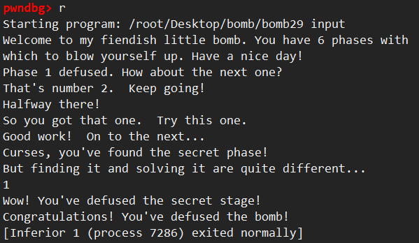
答案:
1 | |